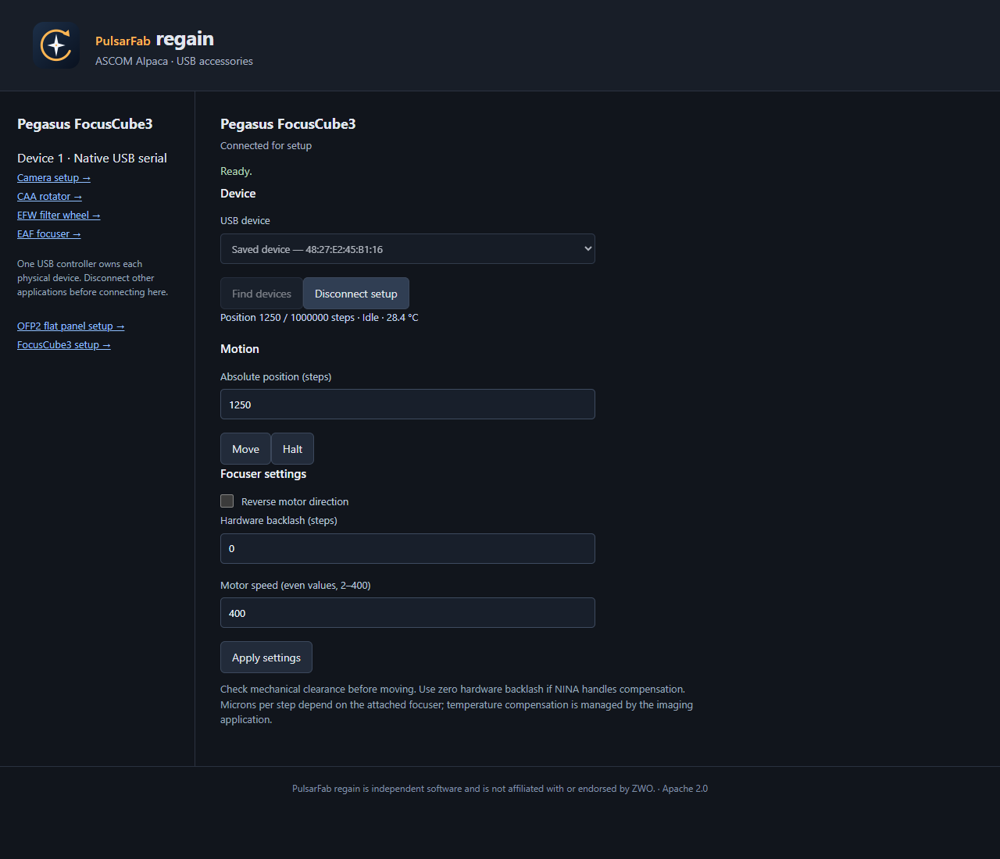

regain documentation
Pegasus Astro FocusCube3
A pure Rust USB serial driver with native NINA, shared Windows ASCOM, and Alpaca connections.
Connect the focuser
- Connect USB. Windows uses its built-in USB Serial Device driver.
- Disconnect FocusCube3 in Pegasus Unity. Closing the Unity window may leave
Peg.Server.exeholding the COM port. - In native NINA or ASCOM, select PulsarFab regain Pegasus FocusCube3 and open setup. Refresh, select the device, and connect for setup.
- For Alpaca, open
/setup/v1/focuser/1/setupon your server. Find/select the focuser, connect for setup, then disconnect setup when finished.
Selection uses the USB serial number, so a changed COM number does not select a different device. A busy or missing device fails connection; it never silently falls back to a simulator.

{kind=link}

Motion and settings
- Positions use absolute steps with a software range of 0–1,000,000. This is not a measured mechanical limit.
- Hardware backlash ranges from 0–1,000 steps. Set it to zero if the host compensates.
- Speed uses even integers from 2 through 400. Verified firmware 1.8.2 rounds odd speeds down; a zero speed must be corrected before movement.
- Halt waits for deceleration. Reverse and backlash are device settings.
- An absent or out-of-range temperature probe reports unavailable. Microns per step and temperature compensation belong to the host application.
Which clients can share?
32-bit and 64-bit ASCOM clients share one local COM server and one serial worker. Disconnecting one client leaves others connected; the final disconnect releases the port. All clients see and control the same focuser position.
Alpaca clients also share the Alpaca server’s worker. Sharing between the native NINA provider, ASCOM server, Alpaca server, and Unity is deferred. Choose one of these to own the port. NINA can use the ASCOM driver when it needs to share with another ASCOM application.
Validation and implementation
Hardware checks used an unmounted FocusCube3 and short moves in both directions. The implementation lives in regain-pegasus::fc3 in current source and requires neither Unity nor its SDK. See protocol traces, tests, and serial ownership details.